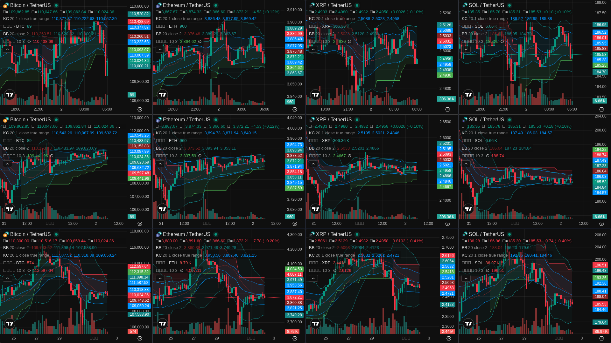

Crypto Watch - 最新截圖
主頁面 - 技術指標分析
Bollinger Bands + Keltner Channels + Supertrend

固定 URL: https://jacobhsu.github.io/crypto-watch/screenshots/crypto-watch-index.png
MA 分析頁面
移動平均交叉 + 威廉鱷魚線

固定 URL: https://jacobhsu.github.io/crypto-watch/screenshots/crypto-watch-latest.png
這些截圖每小時自動更新一次